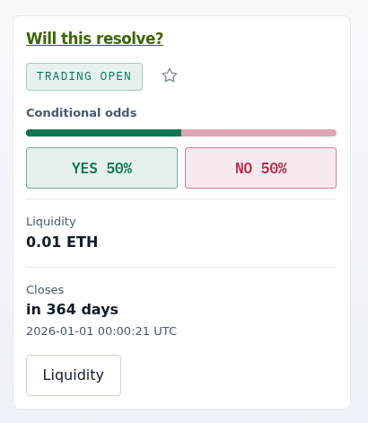
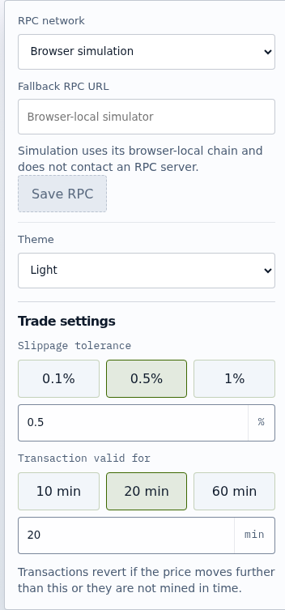
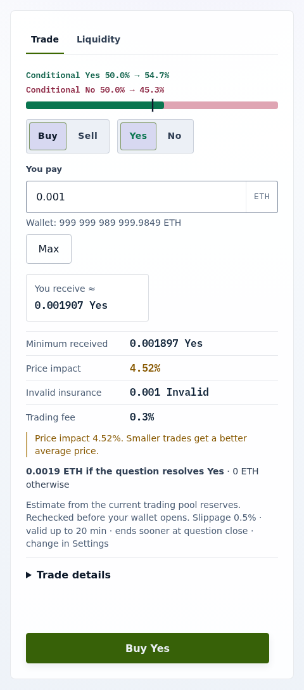

Tutorial
Your first trade
In this tutorial you buy Yes shares in an open market and then sell part of them back for ETH. You will see one ETH purchase become a complete set plus a swap, leaving you Yes shares and Invalid shares, and you will see the sale spend some of that Invalid to pay out ETH.
Before you start
Trading is an exchange for Statoblast outcome shares: each market trades the Yes and No shares of one SecurityPool in a constant-product trading pool.
To practise without a wallet, run bun run app:serve:trading and open http://localhost:4163/?simulate=1#/market/0xfc14E6a11a4eb21e18bF2a965b6575dc081228e2. The browser-local simulator is labeled at the top of the page, starts with one funded market, and never reflects live chain state; the screenshots below come from it. To trade for real, open the UI on a supported network as described in Configure the Trading UI and connect a wallet.
Choose a market
The simulator link above opens the market directly. On a live network, paste a SecurityPool address into Search markets and select Open pool, or follow a shared market link. Opening a market saves it as a favorite. The Markets tab lists your favorites in the selected universe with conditional odds, liquidity, and closing time; select a title to reopen it. The star removes a market from favorites.

Set your protection
Open Settings in the header. Under Trade settings, choose a Slippage tolerance (0.01% to 5%) and how long a transaction stays valid (Transaction valid for, 1 to 1440 minutes). A transaction reverts if the price moves further than the tolerance or it is included after its deadline, so tighter values mean fewer surprises and more reverts. The defaults, 0.5% and 20 minutes, are fine for this tutorial.

Buy Yes
- In the market's Trade tab, select Buy and Yes.
- Enter
0.001in You pay. The estimate appears below the field: You receive ≈, Minimum received, Price impact, Invalid insurance, and Pool fee. A price impact above 5% asks you to confirm it, and above 15% the ticket refuses the trade. - Select Buy Yes and confirm the single
enterPositiontransaction in your wallet. The client checks the price again before the wallet opens.

When the transaction confirms, the Wallet Yes and Wallet Invalid balances under Your position on the market page go up. The ETH became complete sets; the router sold their No for more Yes and sent you all the Yes plus the Invalid. Your Invalid insurance equals the number of complete sets, not the larger Yes total, and you hold no new No.
Sell Yes
- Select Sell and Yes, then enter
0.001in Shares to sell. The 25%, 50%, and Max buttons fill in larger amounts. - Read the estimate: You sell, You receive ≈ in ETH, Minimum received, and Invalid used.
- Select Sell Yes and confirm. No approval is needed: the sale is one ShareToken transfer of your Yes and Invalid to the router.

When it confirms, the ETH is in your wallet, your Invalid has dropped by the amount used, and any Yes the router did not need has come back. If you ask to sell more than your Invalid can insure, the ticket offers the largest amount you can sell now; Exit an insured position covers that case and Why early ETH exits are limited explains the bound.